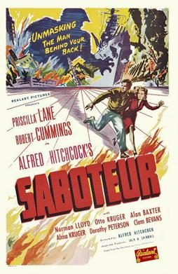

Saboteur

Starring: Lane Sisters, Robert Cummings, Norman Lloyd
Director: Alfred Hitchcock
Writer: Peter Viertel, Joan Harrison, Dorothy Parker
Producer: Frank Lloyd
Saboteur is a 1942 American spy thriller film directed by Alfred Hitchcock with a screenplay written by Peter Viertel, Joan Harrison and Dorothy Parker. The film stars Robert Cummings, Priscilla Lane and Norman Lloyd.
Trivia
- Hitchcock was under contract to David O. Selznick, so he first pitched the idea for the film to him; Selznick gave the okay for a script to be written, assigning John Houseman to keep an eye on its progress and direction.
- Gary Cooper was uninterested in the project and Barbara Stanwyck had other commitments.
- In November 1941, Universal announced that Hitchcock would make the film for the studio, and it would be produced by Frank Lloyd and Jack Skirball.
Previous Showings
9 Runs • 7 Festivals
All runs on record (9):
- March 5 - 6, 1992w/ Lifeboat
- March 2 - 5, 2000Alfred Hitchcock Film Festivalw/ Foreign Correspondent
- April 29 - May 1, 2005w/ Dial M for Murder
- November 10 - 11, 2012UNIVERSAL PICTURES Part 2: 1940-1945w/ The Bank Dick
- February 5 - 8, 2015Hitchcock 2015w/ Rear Window
- November 16 - 17, 2023Universal Pictures: Horror and Morew/ The Suspect
- May 2 - 3, 2024Hitchcock, The Master of Suspense 2024w/ Foreign Correspondent
- July 2 - 3, 2025Hitchcock, The Master of Suspense 2025w/ Rope
- May 7 - 8, 2026Hitchcock, The Master of Suspense 2026w/ Sabotage